Technik Mechatronik • Tworzę zaawansowane roboty i systemy embedded na STM32
Zobacz moje projektyJestem technikiem mechatronikiem z pasją do budowy robotów, elektroniki oraz programowania systemów wbudowanych. Specjalizuję się w mikrokontrolerach STM32, algorytmach sterowania i projektowaniu kompletnych rozwiązań mechatronicznych.
Technik Mechatronik
PCKTiB Oświęcim • 2021 – 2026
Ukończone technikum z tytułem zawodowym Technika Mechatronika.
Marzec 2024
Programowanie PLC, projektowanie elementów maszyn w 3D CAD oraz wsparcie przy modernizacji linii produkcyjnych.
RoboComp 2025 (międzynarodowy)
XChallange 2025 (międzynarodowy)
RoboticTournament 2026 (międzynarodowy)
RoboticArena 2026 (międzynarodowy)
Roztoczańska Liga Robotów 2025
RoboticArena 2025 (międzynarodowy)
EastRobo 2025 (międzynarodowy)
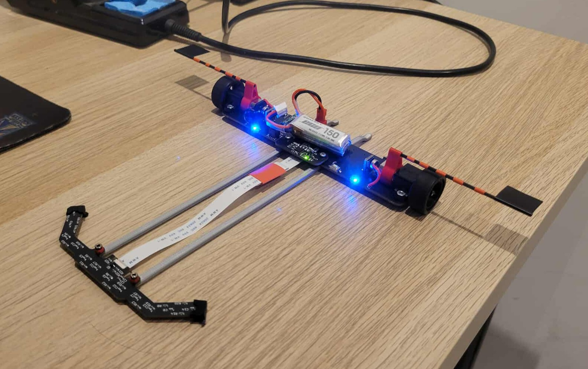
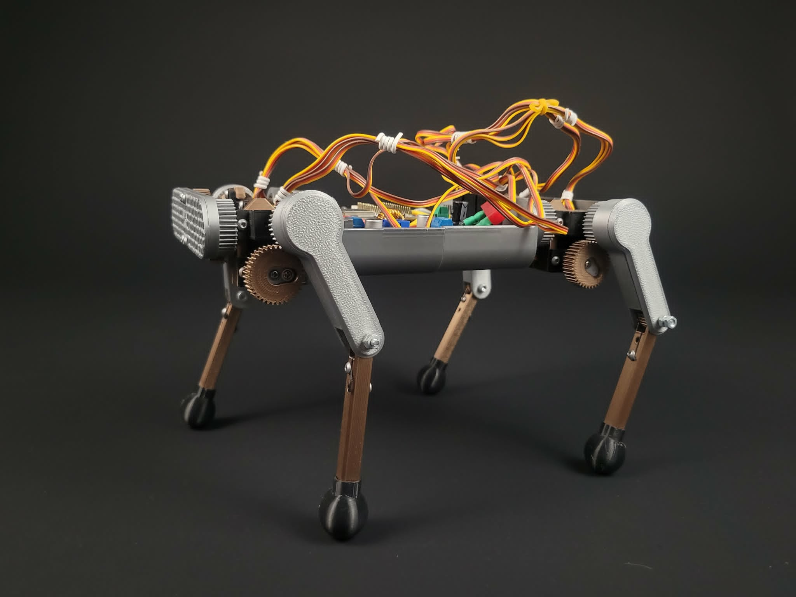
Autonomiczny robot kroczący z uczeniem maszynowym (work in progress).
• Work in Progress •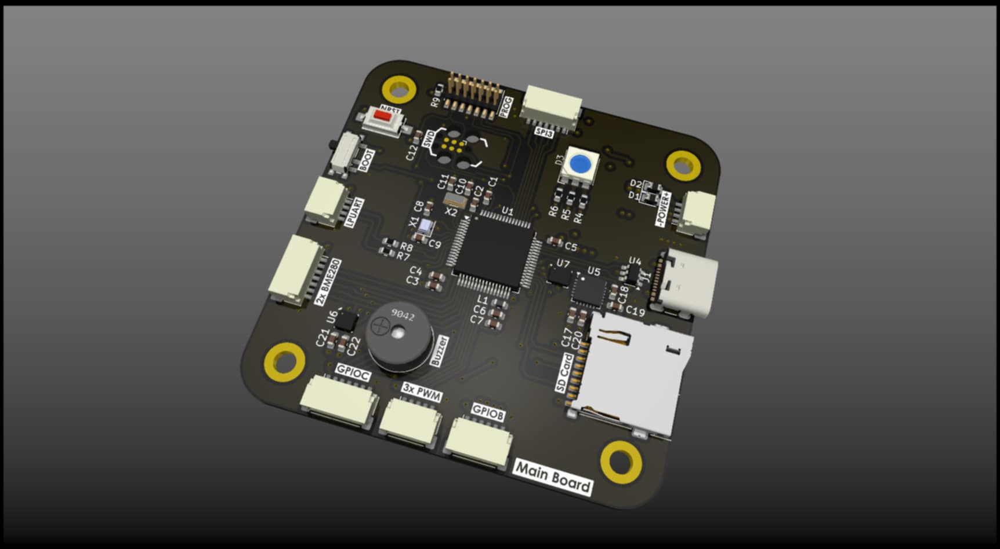
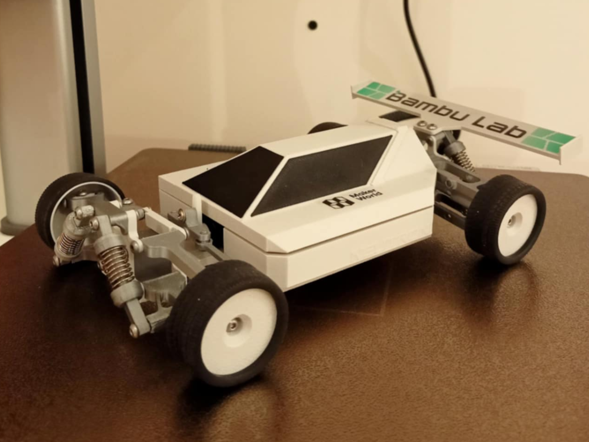
Modele do druku 3D udostępnione społeczności na platformie MakerWorld.
Zobacz modele →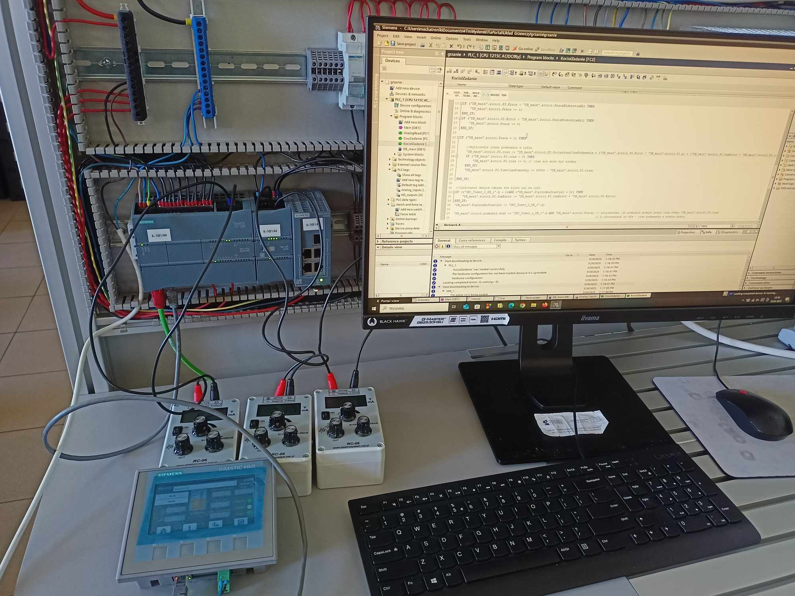
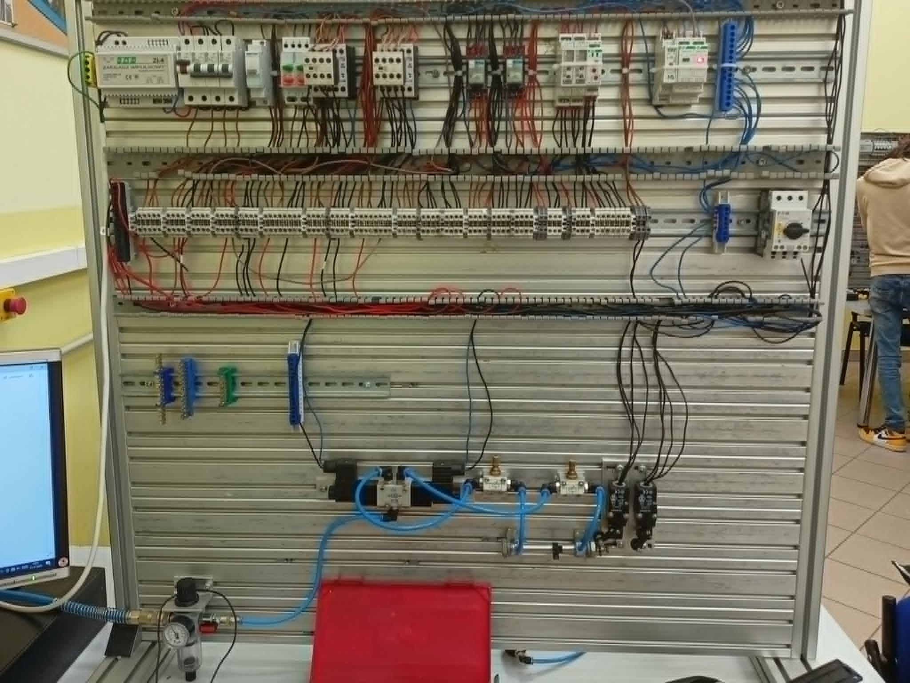
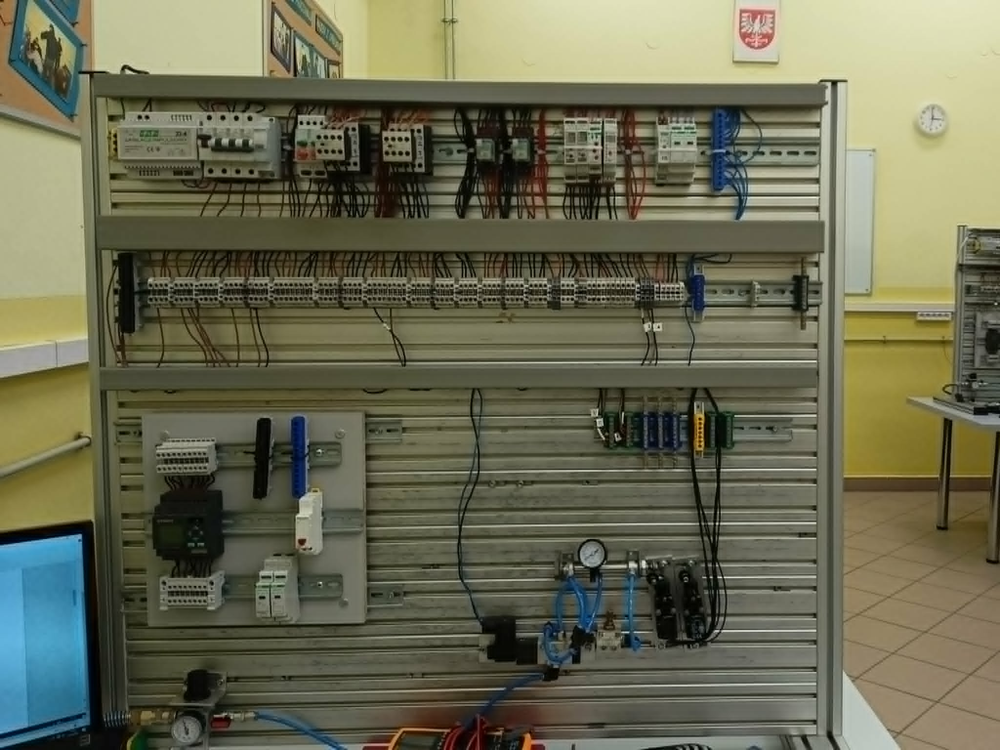
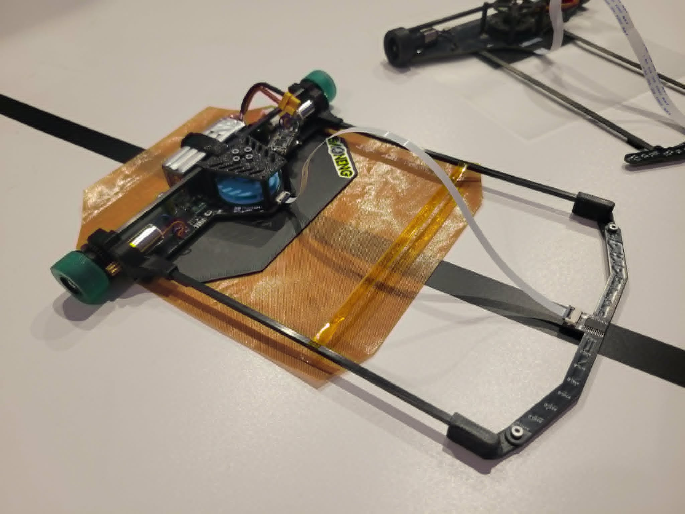
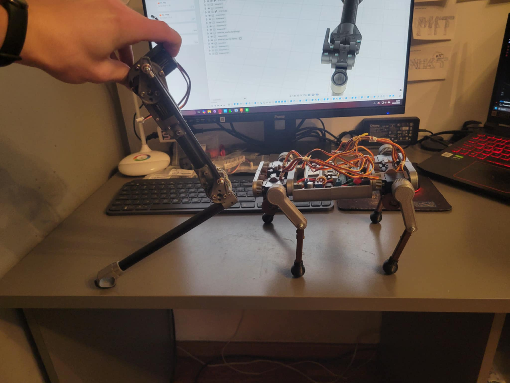
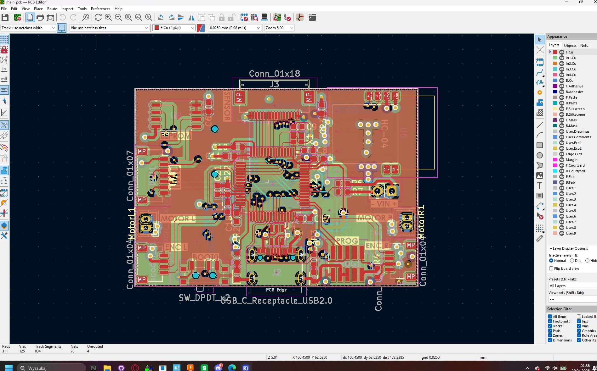
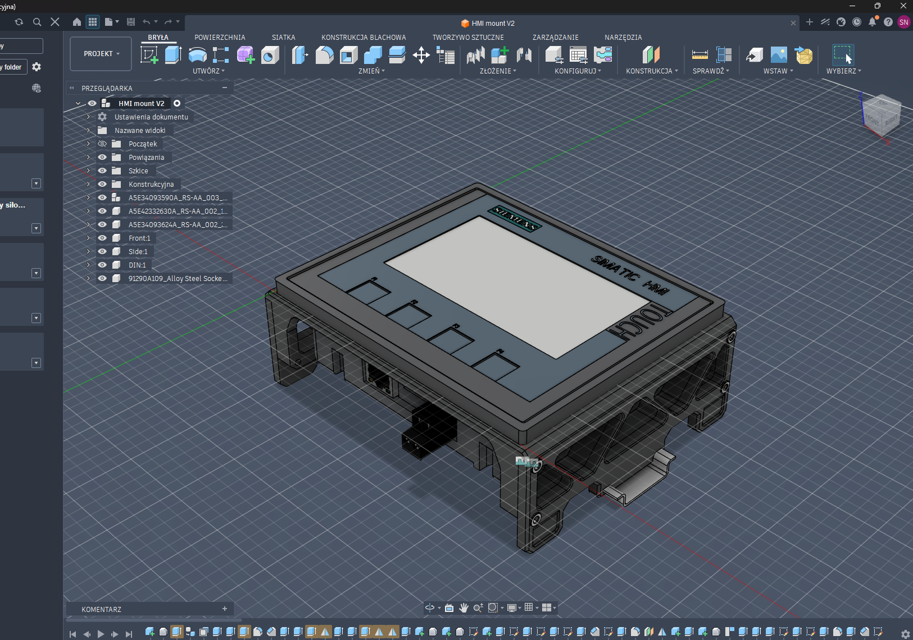
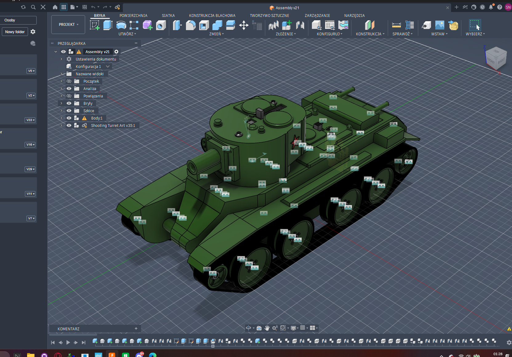
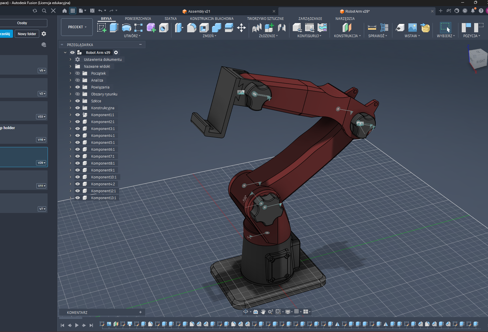
Chętnie porozmawiam o projektach i współpracy.
Telefon: +48 725 213 190